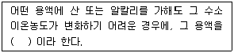
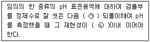
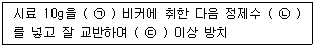
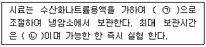
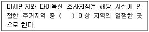
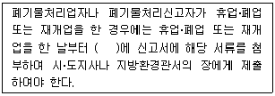
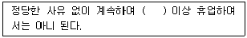

폐기물처리산업기사 (2019-04-27 기출문제)
1과목: 폐기물개론
1. 쓰레기 발생원과 발생 쓰레기 종류의 연결로 가장 거리가 먼 것은?
- 주택지역 - 조대폐기물
- 개방지역 - 건축폐기물
- 농업지역 - 유해폐기물
- 상업지역 - 합성수지류
(정답률: 70%)

2. 쓰레기를 압축시켜 용적 감소율(volume reduction)이 61%인 경우 압축비(compactor ratio)는?
- 2.1
- 2.6
- 3.1
- 3.6
(정답률: 74%)
3. 함수율이 각각 90%, 70%인 하수슬러지를 무게비 3 : 1로 혼합하였다면 혼합 하수 슬러지의 함수율(%)은? (단, 하수 슬러지 비중 = 1.0)
- 81
- 83
- 85
- 87
(정답률: 72%)
4. 물렁거리는 가벼운 물질로부터 딱닥한 물질을 선별하는 데 이용되며, 경사진 컨베이어를 통해 폐기물을 주입시켜 회전하는 드럼 위에 떨어뜨려 분류하는 선별 방식은?
- Stoners
- Jigs
- Secators
- Float Separator
(정답률: 91%)
5. 제품 및 제품에 의해 발생된 폐기물에 대하여 포괄적인 생산자의 책임을 원칙으로 하는 제도는?
- 종량제
- 부담금제도
- EPR제도
- 전표제도
(정답률: 82%)
6. 폐기물의 퇴비화 조건이 아닌 것은?
- 퇴비화하기 쉬운 물질을 선정한다.
- 분뇨, 슬러지 등 수분이 많을 경우 Bulking Agent를 혼합한다.
- 미생물 식종을 위해 부숙 중인 퇴비의 일부를 반송하여 첨가한다.
- pH가 5.5 이하인 경우 인위적인 pH 조절을 위해 탄산칼슘을 첨가한다.
(정답률: 70%)
7. 발열량과 발열량 분석에 관한 설명으로 틀린 것은?
- 발열량은 쓰레기 1kg을 완전연소시킬 때 발생하는 열량(kcal)을 말한다.
- 고위발열량(Hh)은 발열량계에서 측정한 값에서 물의 증발잠열을 뺀 값을 말한다.
- 발열량 분석은 원소분석 결과를 이용하는 방법으로 고위발열량과저위발열량을 추정할 수있다.
- 저위발열량(H1, kcal/kg)을 산정하는 방법은 Hh-600(9H+W)을 사용한다.
(정답률: 82%)
8. 쓰레기 수거능을 판별할 수 있는 MHT에 대한 설명으로 가장 적절한 것은?
- 1톤의 쓰레기를 수거하는 데 수거인부 1인이 소요하는 총 시간
- 1톤의 쓰레기를 수거하는 데 소요되는 인부 수
- 수거인부 1인이 시간당 수거하는 쓰레기 톤 수
- 수거인부 1인이 수거하는 쓰레기 톤 수
(정답률: 87%)
9. 쓰레기의 발생량 조사 방법이 아닌 것은?
- 경향법
- 적재차량 계수분석법
- 직접 계근법
- 물질 수지법
(정답률: 88%)
10. 선별에 관한 설명으로 맞는 것은?
- 회전스크린은 회전자를 이용한 탄도식 선별장치이다.
- 와전류 선별기는 철로부터 알루미늄과 구리의 2가지를 모두 분리할 수 있다.
- 경상 컨베이어 분리기는 부상선별기의 한 종류이다.
- Zigzag 공기선별기는 column의 난류를 줄여줌으로써 선별 효율을 높일 수 있다.
(정답률: 66%)
11. 1⑤ ~ 110℃에서 4시간 건조된 쓰레기의 회분량은 15%인 것으로 조사되었다. 이 경우 건조 전 수분을 함유한 생쓰레기의 회분량(%)은? (단, 생쓰레기의 함수율 = 25%)
- 16.25
- 13.25
- 11.25
- 8.25
(정답률: 53%)
12. 쓰레기의 발생량 조사 방법인 물질수지법에 관한 설명으로 옳지 않은 것은?
- 주로 산업폐기물 발생량을 추산할 때 이용 된다.
- 비용이 저렴하고 정확한 조사가 가능하여 일반적으로 많이 활용 된다.
- 조사하고자 하는 계의 경계를 정확하게 설정하여야 한다.
- 물질수지를 세울 수 있는 상세한 데이터가 있는 경우에 가능하다.
(정답률: 83%)
13. 슬러지의 함유수분 중 가장 많은 수분함유도를 유지하고 있는 것은?
- 표면부착수
- 모관결합수
- 간극수
- 내부수
(정답률: 66%)
14. 폐기물관리법의 적용을 받는 폐기물은?
- 방사능 폐기물
- 용기에 들어 있지 않은 기체상 물질
- 분뇨
- 폐유독물
(정답률: 66%)
15. 연간 폐기물 발생량이 8000000톤인 지역에서 1일 평균 수거인부가 3000명이 소요되었으며, 1일 작업시간이 평균 8시간일 경우 MHT는? (단, 1년 = 365일로 산정)
- 1.0
- 1.1
- 1.2
- 1.3
(정답률: 69%)
16. 적환장에 대한 설명으로 옳지 않은 것은?
- 최종처리장과 수거지역의 거리가 먼 경우 사용하는 것이 바람직하다.
- 저밀도 거주지역이 존재할 때 설치한다.
- 재사용 가능한 물질의 선별시설 설치가 가능하다.
- 대용량의 수집차량을 사용할 때 설치한다.
(정답률: 80%)
17. 고형분의 50%인 음식물쓰레기 10ton을 소각하기 위해 수분 함량을 20%가 되도록 건조 시켰다. 건조된 쓰레기의 최종중량(ton)은? (단, 비중은 1.0 기준)
- 약 3.0
- 약 4.1
- 약 5.2
- 약 6.3
(정답률: 64%)
18. LCA(전과정 평가, Life Cycle Assessment)의 구성요소에 해당하지 않는 것은?
- 목적 및 범위에 설정
- 분석평가
- 영향평가
- 개선평가
(정답률: 62%)
19. 생활폐기물의 발생량을 나타내는 발생원 단위로 가장 적합한 것은?
- kg/capita‧day
- ppm/capita‧day
- m3/capita‧day
- L/capita‧day
(정답률: 91%)
20. 폐기물의 열분해(Pyrolysis)에 관한 설명으로 틀린 것은?
- 무산소 또는 저산소 상태에서 반응한다.
- 분해와 응축반응이 일어난다.
- 발열반응이다.
- 반응시 생성되는 Gas는 주로 메탄, 일산화탄소, 수소가스이다.
(정답률: 75%)
2과목: 폐기물처리기술
21. 혐기성 소화의 장‧단점이라 할 수 없는 것은?
- 동력시설을 거의 필요로 하지 않으므로 운전 비용이 저렴하다.
- 소화 슬러지의 탈수 및 건조가 어렵다.
- 반응이 더디고 소화기간이 비교적 오래 걸린다.
- 소화가스는 냄새가 나며 부식성이 높은 편이다.
(정답률: 67%)
22. 함수율이 99%인 잉여슬러지 40m3를 농축하여 96%로 했을 때 잉여슬러지의 부피(m3)는?
- 5
- 10
- 15
- 20
(정답률: 73%)
23. 사업장폐기물의 퇴비화에 대한 내용으로 틀린 것은?
- 퇴비화 이용이 불가능하다.
- 토양오염에 대한 평가가 필요하다.
- 독성물질의 함유농도에 따라 결정하여야 한다.
- 중금속 물질의 전처리가 필요하다.
(정답률: 76%)
24. 일반폐기물의 소각처리에서 통상적인 폐기물의 원소 분석치를 이용하여 얻을 수 있는 항목으로 가장 거리가 먼 것은?
- 연소용 공기량
- 배기가스양 및 조성
- 유해가스의 종류 및 양
- 소각재의 성분
(정답률: 63%)
25. 해안매립공법에 대한 설명으로 옳지 않은 것은?
- 순차투입방법은 호안측에서부터 순차적으로 쓰레기를 투입하여 육지화하는 방법이다.
- 수심이 깊은 처분장에서는 건설비 과다로 내수를 완전히 배제하기가 곤란한 경우가 많아 순차투입방법을 택하는 경우가 많다.
- 처분장은 면적이 크고 1일 처분량이 많다.
- 수중부에 쓰레기를 깔고 압축작업과 복토를 실시하므로 근본적으로 내륙매립과 같다.
(정답률: 78%)
26. 쓰레기 소각로의 열부하가 50000kcal/m3‧ hr이며 쓰레기의 저위발열량 1800kcal/kg, 쓰레기중량 20000kg일 때 소각로의 용량(m3)은? (단, 소각로는 8시간 가동)
- 15
- 30
- 60
- 90
(정답률: 59%)
27. 매립된 쓰레기양이 1000ton이고, 유기물 함량이 40%이며, 유기물에서 가스로 전환율이 70%이다. 유기물 kg당 0.5m3의 가스가 생성되고 가스 중 메탄함량이 40%일 때 발생되는 총 메탄의 부피(m3)는? (단, 표준상태로 가정)
- 46000
- 56000
- 66000
- 76000
(정답률: 75%)
28. 폐타이어의 재활용 기술로 가장 거리가 먼 것은?
- 열분해를 이용한 연료 회수
- 분쇄 후 유동층 소각로의 유동매체로 재활용
- 열병합 발전의 연료로 이용
- 고무 분말 제조
(정답률: 63%)
29. 오염된 농경지의 정화를 위해 다른 장소로부터 비오염 토양을 운반하여 넣는 정화기술은?
- 객토
- 반전
- 희석
- 배토
(정답률: 84%)
30. 일반적으로 매립지 내 분해속도가 가장 느린 구성물질은?
- 지방
- 단백질
- 탄수화물
- 섬유질
(정답률: 80%)
31. 매립장 침출수의 차단방법 중 표면차수막에 관한 설명으로 가장 거리가 먼 것은?
- 보수는 매립 전이라면 용이하지만 매립 후는 어렵다.
- 시공 시에는 눈으로 차수성 확인이 가능하지만 매립이 이루어지면 어렵다.
- 지하수 집배수시설이 필요하지 않다.
- 차수막의 단위면적당 공사비는 비교적 싸지만 총공사비는 비싸다.
(정답률: 80%)
32. 일반적인 슬러지 처리 계통도가 가장 올바르게 나열된 것은?
- 농축 → 안정화 → 개량 → 탈수 → 소각
- 탈수 → 개량 → 건조 → 안정화 → 소각
- 개량 → 안정화 → 농축 → 탈수 → 소각
- 탈수 → 건조 → 안정화 → 개량 → 소각
(정답률: 75%)
33. 내륙매립공법 중 도랑형공법에 대한 설명으로 옳지 않은 것은?
- 전처리로 압축 시 발생되는 수분처리가 필요하다.
- 침출수 수집장치나 차수막 설치가 어렵다.
- 사전 정비작업이 그다지 필요하지 않으나 매립용량이 낭비된다.
- 파낸 흙을 복토재로 이용 가능한 경우에 경제적이다.
(정답률: 52%)
34. 쓰레기 퇴비장(야적)의 세균 이용법에 해당하는 것은?
- 대장균 이용
- 혐기성 세균의 이용
- 호기성 세균의 이용
- 녹조류의 이용
(정답률: 74%)
35. 폐기물 고화처리 시 고화재의 종류에 따라 무기적 방법과 유기적 방법으로 나눌 수 있다. 유기적 고형화에 관한 설명으로 틀린 것은?
- 수밀성이 크며 다양한 폐기물에 적용할 수 있다.
- 최종 고화체의 체적 증가가 거의 균일하다.
- 미생물, 자외선에 대한 안정성이 약하다.
- 상업화된 처리법의 현장자료가 빈약하다.
(정답률: 64%)
36. 고형화 처리의 목적에 해당하지 않는 것은?
- 취급이 용이하다.
- 폐기물 내 독성이 감소한다.
- 폐기물 내 오염물질의 용해도가 감소한다.
- 폐기물 내 손실성분이 증가한다.
(정답률: 65%)
37. 매립지에서 흔히 사용되는 합성차수막이 아닌 것은?
- LFG
- HDPE
- CR
- PVC
(정답률: 76%)
38. 소화 슬러지의 발생량은 투입량(200kL)의 10%이며 함수율이 95%이다. 탈수기에서 함수율을 80%로 낮추면 탈수된 cake의 부피(m3)는? (단, 슬러지의 비중 = 1.0)
- 2.0
- 3.0
- 4.0
- 5.0
(정답률: 54%)
39. 혐기성 분해에 영향을 주는 인자로서 가장 거리가 먼 것은?
- 탄질비
- pH
- 유기산농도
- 온도
(정답률: 65%)
40. 다양한 종류의 호기성미생물과 효소를 이용하여 단기간에 유기물을 발효시켜 사료를 생산하는 습식방식에 의한 사료화의 특징이 아닌 것은?
- 처리 후 수분함량이 30% 정도로 감소한다.
- 종균제 투입 후 30~60℃에서 24시간 발효와 350℃에서 고온 멸균처리한다.
- 비용이 적게 소요된다.
- 수분함량이 높아 통기성이 나쁘고 변질 우려가 있다.
(정답률: 46%)
3과목: 폐기물 공정시험 기준(방법)
41. 다음에 제시된 온도의 최대 범위 중 가장 높은 온도를 나타내는 것은?
- 실온
- 상온
- 온수
- 노출된 노말헥산의 증류온도
(정답률: 72%)
42. 다음 설명에서 ( )에 알맞은 것은?

- 규정액
- 표준액
- 완충액
- 중성액
(정답률: 70%)
43. pH 측정의 정밀도에 관한 내용으로 ( )에 옳은 내용은?

- ㉠ 3회, ㉡ ±0.5
- ㉠ 3회, ㉡ ±0.⑤
- ㉠ 5회, ㉡ ±0.5
- ㉠ 5회, ㉡ ±0.⑤
(정답률: 63%)
44. 폐기물의 고형물 함량을 측정하였더니 18%로 측정되었다. 고형물 함량으로 분류할 때 해당되는 것은?
- 고상폐기물
- 액상폐기물
- 반고상폐기물
- 알 수 없음
(정답률: 77%)
45. 유도결합플라즈마-원자발광분광법에 대한 설명으로 틀린 것은?
- 플라즈마가스로는 순도 99.99%(V/V%)이상의 압축아르곤가스가 사용된다.
- 플라즈마 상태에서 원자가 여기상태로 올라갈 때 방출하는 발광선으로 정량분석을 수행한다.
- 플라즈마는 그 자체가 광원으로 이용되기 때문에 매우 넓은 농도 범위에서 시료를 측정할 수 있다.
- 많은 원소를 동시에 분석이 가능하다.
(정답률: 53%)
46. 폐기물 용출조작에 관한 설명으로 틀린 것은?
- 상온, 상압에서 진탕회수를 매분 약 200회로 한다.
- 진폭 6~8cm의 진탕기를 사용한다.
- 진탕기로 6시간 연속 진탕한다.
- 여과가 어려운 경우 원심분리기를 사용하여 매 분당 3000회선 이상으로 20분 이상 원심 분리한다.
(정답률: 69%)
47. 반고상 또는 고상 폐기물의 pH 측정법으로 ( )에 옳은 것은?

- ㉠ 100mL, ㉡ 50mL, ㉢ 10분
- ㉠ 100mL, ㉡ 50mL, ㉢ 30분
- ㉠ 50mL, ㉡ 25mL, ㉢ 10분
- ㉠ 50mL, ㉡ 25mL, ㉢ 30분
(정답률: 64%)
48. 함수율이 90%인 슬러지를 용출시험하여 구리의 농도를 측정하니 1.0mg/L로 나타났다. 수분함량을 보정한 용출시험 결과치(mg/L)는?
- 0.6
- 0.9
- 1.1
- 1.5
(정답률: 36%)
49. 폐기물 중 시안을 측정(이온전극법)할 때 시료채취 및 관리에 관한 내용으로 ( )에 알맞은 것은?

- ㉠ pH 10 이상, ㉡ 8시간
- ㉠ pH 10 이상, ㉡ 24시간
- ㉠ pH 12 이상, ㉡ 8시간
- ㉠ pH 12 이상, ㉡ 24시간
(정답률: 69%)
50. pH가 2인 용액 2L와 pH가 1인 용액 2L를 혼합하면 pH는?
- 1.0
- 1.3
- 2.0
- 2.3
(정답률: 70%)
51. 기체크로마토그래피에 사용되는 분리용 컬럼의 McReynold 상수가 작다는 것이 의미하는 것은?
- 비극성컬럼이다.
- 이론단수가 작다.
- 체류시간이 짧다.
- 분리효율이 떨어진다.
(정답률: 59%)
52. 자외선/가시선분광법을 이용한 시안 분석을 위해 시료를 증류할 때 증기로 유출디는 시안의 형태는?
- 시안산
- 시안화수소
- 염화시안
- 시아나이드
(정답률: 76%)
53. 폐기물 시료채취를 위한 채취도구 및 시료 용기에 관한 설명으로 틀린 것은?
- 노말헥산 추출물질 실험을 위한 시료 채취시는 갈색경질의 유리병을 사용하여야 한다.
- 유기인 실험을 위한 시료 채취 시는 갈색경질의 유리병을 사용하여야 한다.
- 시료 중에 다른 물질의 혼입이나 성분의 손실을 방지하기 위하여 코르크 마개를 사용하며, 다만 고무마개는 셀로판지를 씌워 사용할 수 도 있다.
- 시료용기에는 폐기물의 명칭, 대상 폐기물의 양, 채취장소, 채취시간 및 일기, 시료 번호, 채취책임자 이름, 시료의 양, 채취방법, 기타 참고자료를 기재한다.
(정답률: 76%)
54. 원자흡수분광광도법(공기-아세틸렌 불꽃)으로 크롬을 분석할 때 철, 니켈 등의 공존물질에 의한 방해를 방지하기 위해 넣어 주는 시약은?
- 질산나트륨
- 임산나트륨
- 황산나트륨
- 염산나트륨
(정답률: 72%)
55. 시료의 전처리 방법 중 다량의 점토질 또는 규산염을 함유한 시료에 적용하는 것은?
- 질산-과염소산 분해법
- 질산-과염소산-불화수소산 분해법
- 질산-과염소산-염화수소산 분해법
- 질산-과염소산-황화수소산 분해법
(정답률: 73%)
56. 시료의 전처리방법에서 유기물을 높은 비율로 함유하고 있으면서 산화 분해가 어려운 시료에 적용되는 방법은?
- 질산-황산 분해법
- 질산-과염소산 분해법
- 질산-과염소산-불화수소 분해법
- 질산-염산 분해법
(정답률: 55%)
57. 기체크로마토그래피법에서 유기인 화합물의 분석에 사용되는 검출기와 가장 거리가 먼 것은?
- 전자포획형 검출기
- 알칼리열이온화 검출기
- 불꽃광도 검출기
- 열전도도 검출기
(정답률: 39%)
58. 자외선/가시선 분광법으로 6가크롬을 측정할 때 흡수셀 세척에 사용되는 시약이 아닌 것은?
- 탄산나트륨
- 질산(1+5)
- 과망간산칼륨
- 에틸알코올
(정답률: 63%)
59. 원자흡수분광광도법으로 측정할 수 없는 것은?
- 시안, 유기인
- 구리, 납
- 비소, 수은
- 철, 니켈
(정답률: 55%)
60. 편광현미경법으로 석면을 측정할 kEo 석면의 정량범위는?
- 1 ~ 25%
- 1 ~ 50%
- 1 ~ 75%
- 1 ~ 100%
(정답률: 70%)
4과목: 폐기물 관계 법규
61. 환경부령이 정하는 폐기물처리담당자로서 교육기관에서 실시하는 교육을 받아야 하는 자로 알맞은 것은?(오류 신고가 접수된 문제입니다. 반드시 정답과 해설을 확인하시기 바랍니다.)
- 폐기물재활용신고자
- 폐기물처리시설의 기술관리인
- 폐기물처리업에 종사하는 기술요원
- 폐기물분석전문기관의 기술요원
(정답률: 56%)
62. 폐기물처리시설 주변지역 영향조사 기준 중 조사방법(조사지점)에 관한 내용으로 ( )에 옳은 것은?

- 2개소
- 3개소
- 4개소
- 5개소
(정답률: 71%)
63. 폐기물 처리업자가 폐기물의 발생, 배출, 처리상황 등을 기록한 장부의 보존 기간은? (단, 최종 기재일 기준)
- 6개월간
- 1년간
- 3년간
- 5년간
(정답률: 78%)
64. 의료폐기물의 종류 중 위해의료폐기물의 종류와 가장 거리가 먼 것은?
- 전염성류 폐기물
- 병리계 폐기물
- 손상성 폐기물
- 생물‧화학 폐기물
(정답률: 60%)
65. 지정폐기물 처리시설 중 기술관리인을 두어야 할 차단형 매립시설의 면적규모 기준은?
- 330m2 이상
- 1000m2 이상
- 3300m2 이상
- 10000m2 이상
(정답률: 53%)
66. 사업장폐기물의 종류별 세부분류번호로 옳은 것은? (단, 사업장일반폐기물의 세부분류 및 분류번호)
- 유기성오니류 31-01-00
- 유기성오니류 41-01-00
- 유기성오니류 51-01-00
- 유기성오니류 61-01-00
(정답률: 74%)
67. 폐기물처리업의 변경신고를 하여야 할 사항으로 틀린 것은?
- 상호의 변경
- 연락장소나 사무실 소재지의 변경
- 임시차량의 증차 또는 운반차량의 감차
- 처리용량 누계의 30% 이상 변경
(정답률: 49%)
68. 폐기물처리시설에 대한 환경부령으로 정하는 검사기관이 잘못 연결된 것은?(오류 신고가 접수된 문제입니다. 반드시 정답과 해설을 확인하시기 바랍니다.)
- 소각시설의 검사기관 : 한국기계연구원
- 음식물류 폐기물 처리시설의 검사기관 : 한국산업기술시험원
- 멸균분쇄시설의 검사기관 : 한국산업기술시험원
- 매립시설의 검사기관 : 한국환경공단
(정답률: 49%)
69. 지정폐기물배출자는 사업장에서 발생되는 지정폐기물인 폐산을 보관개시일부터 최소 며칠을 초과하여 보관하여서는 안 되는가?
- 90일
- 70일
- 60일
- 45일
(정답률: 66%)
70. 2년 이하의 징역이나 2천만원 이하의 벌금에 처하는 경우가 아닌 것은?(오류 신고가 접수된 문제입니다. 반드시 정답과 해설을 확인하시기 바랍니다.)
- 폐기물의 재활용 용도 또는 방법을 위반하여 폐기물을 처리하여 주변 환경을 오염시킨 자
- 폐기물의 수출입 신고 의무를 위반하여 신고를 하지 아니하거나 허위로 신고한 자
- 폐기물 처리업의 업종 구분과 영업내용의 범위를 벗어나는 영업을 한 자
- 폐기물 회수 조치 명령을 이행하지 아니한 자
(정답률: 44%)
71. 폐기물의 수집‧운반‧보관‧처리에 관한 기준 및 방법에 대한 설명으로 틀린 것은?
- 해당 폐기물을 적정하게 처분, 재활용 또는 보관할 수 있는 장소 외의 장소로 운반하지 아니할 것
- 폐기물의 종류와 성질‧상태별 재활용 가능성 여부 가연성이나 , 불연성 여부 등에 따라 구분하여 수집‧운반‧보관할 것
- 폐기물을 처분 또는 재활용하는 자가 폐기물을 보관하는 경우에는 그 폐기물 처분시설 또는 재활용시설과 다른 사업장에 있는 보관시설에 보관할 것
- 수집‧운반‧보관의 과정에서 침출수가 생기는 경우에는 환경부령으로 정하는 바에 따라 처리할 것
(정답률: 71%)
72. 폐기물처리업자 또는 폐기물처리신고자의 휴업‧폐업 등의 신고에 관한 내용으로 ( )에 옳은 것은?

- 10일 이내
- 15일 이내
- 20일 이내
- 30일 이내
(정답률: 71%)
73. 폐기물처리시설을 환경부령으로 정하는 기준에 맞게 설치하되, 환경부령으로 정하는 규모 미만의 폐기물 소각 시설을 설치, 운영하여서는 아니 된다. 이를 위반하여 설치가 금지되는 폐기물 소각시설을 설치, 운영한 자에 대한 벌칙 기준은?
- 6개월 이하의 징역이나 5백만원 이하의 벌금
- 1년 이하의 징역이나 1천만원 이하의 벌금
- 2년 이하의 징역이나 2천만원 이하의 벌금
- 3년 이하의 징역이나 3천만원 이하의 벌금
(정답률: 45%)
74. 3년 이하의 징역이나 3천만원 이하의 벌금에 처하는 경우가 아닌 것은?
- 거짓이나 그 밖의 부정한 방법으로 폐기물분석전문기관으로 지정을 받거나 변경지정을 받는 자
- 다른 자의 명의나 상호를 사용하여 재활용 환경성평가를 하거나 재활용환경성평가기관지정서를 빌린 자
- 유해성기준에 적합하지 아니하게 폐기물을 재활용한 제품 또는 물질을 제조하거나 유통한 자
- 고의로 사실과 다른 내용의 폐기물분석결과서를 발급한 폐기물분석전문기관
(정답률: 46%)
75. 폐기물처리 신고자의 준수사항 기준으로 ( )에 옳은 것은?

- 6개월
- 1년
- 2년
- 3년
(정답률: 77%)
76. 음식물류 폐기물처리시설의 검사기관으로 옳은 것은?
- 한국산업기술시험원
- 한국환경자원공사
- 시‧도 보건환경연구원
- 수도권매립지관리공사
(정답률: 57%)
77. 폐기물처리담당자에 대한 교육을 실시하는 기관이 아닌 것은?
- 국립환경인력개발원
- 환경관리공단
- 한국환경자원공사
- 환경보전협회
(정답률: 47%)
78. 폐기물처리시설의 사후관리기준 및 방법에 규정된 사후관리 항목 및 방법에 따라 조사한 결과를 토대로 매립시설이 주변 환경에 미치는 영향에 대한 종합보고서를 매립시설의 사용종료신고 후 몇 년 마다 작성하여야 하는가?
- 1년
- 2년
- 3년
- 5년
(정답률: 59%)
79. 폐기물 처분시설 또는 재활용시설 중 음식물류폐기물을 대상으로 하는 시설의 기술관리인 자격기준으로 틀린 것은?
- 산업위생산업기사
- 화공산업기사
- 토목산업기사
- 전기기사
(정답률: 56%)
80. 정사후관리 대상인 폐기물 매립시설은 사용이 종료되거나 그 시설이 폐쇄된 날로부터 몇 년 이내로 토지이용을 제한하는가?
- 10년
- 20년
- 30년
- 40년
(정답률: 77%)